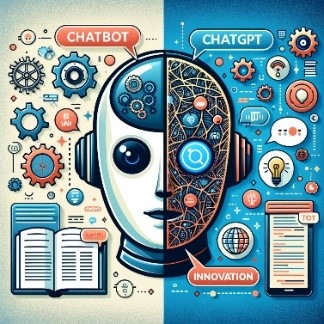
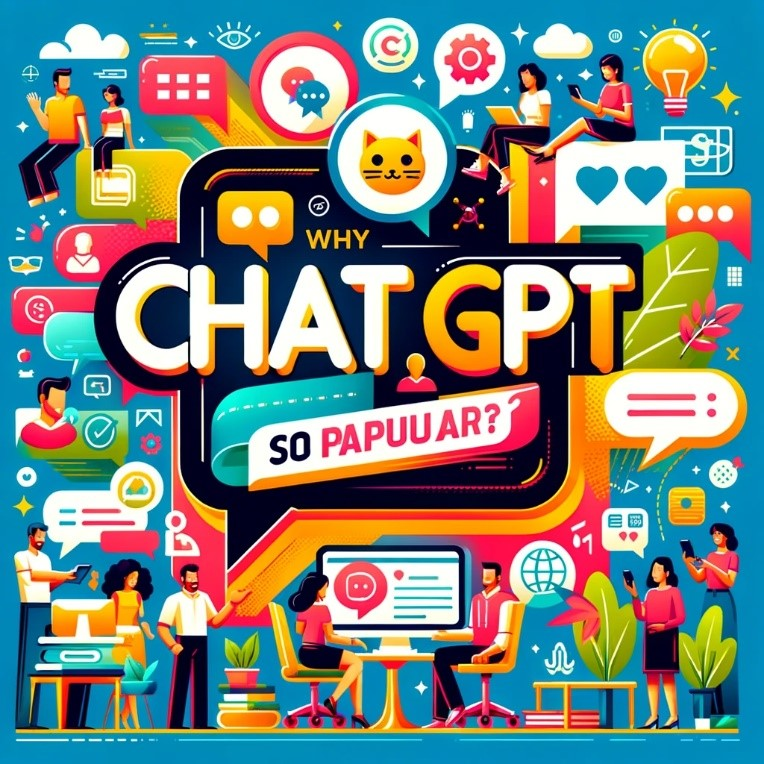

Distinction between Chatbot and ChatGPT
Chatbots and ChatGPT differ mainly in their underlying technology and functionality. Traditional  Chatbots operate based on pre-set rules and responses, handling inquiries with pre-programmed answers. They excel in handling specific tasks but falter with complex or unexpected questions, as they lack the ability to understand context or intent beyond their code. ChatGPT, on the other hand, is powered by advanced AI, specifically OpenAI's Generative Pre-Trained Transformer. It utilizes machine learning to comprehend and generate human-like text, allowing it to respond to a wide array of topics with greater flexibility. ChatGPT's strength lies in its capacity to learn from interactions, thereby providing more nuanced and context-aware responses. Here are the few points as below: Complexity: Chatbots use simple rule-based systems, while ChatGPT employs an advanced AI model for nuanced understanding. Interactivity: Chatbots have limited conversational flows, but ChatGPT can engage in more fluid, human-like discussions. Learning: Unlike static Chatbots, ChatGPT adapts and learns from interactions to improve over time. Response Creation: Chatbots respond with pre-written answers, whereas ChatGPT dynamically generates each reply. Versatility: Chatbots serve narrow functions, whereas ChatGPT's wide-ranging capabilities allow it to operate across various tasks and topics.
